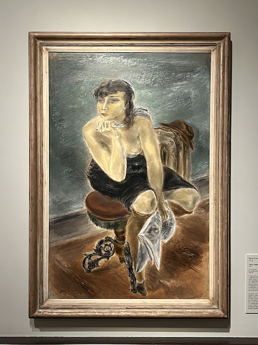
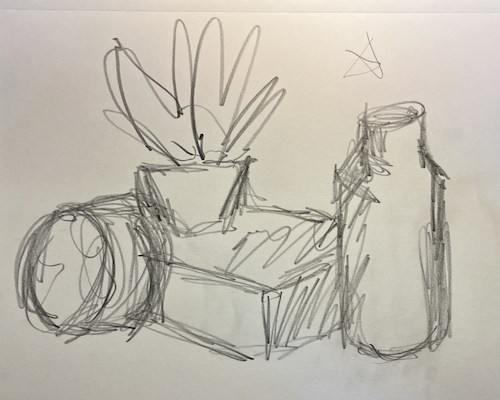
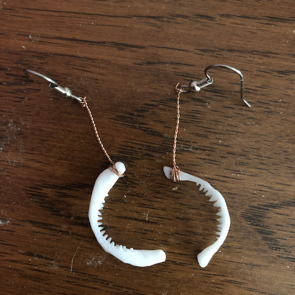
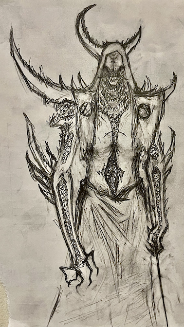

I Love Museums ♥
I grew up in Chicago, so between the Field Museum, the Adler Planetarium, and the Museum of Science and Industry, I was spoiled with a wealth of lovely museums. In the six years I've lived in Cinci, I've grown to love its museums too. My personal favorite is the Cincinnati Art Museum. You can get there by bus from UC, and it's a great date spot too.

I Love TTRPGs ♥
A Dungeons & Dragons campaign I've been playing in since 2021 is poised to end soon. We're besieging a castle at the center of an undead city and if our information is correct there will be a dragon in its dungeon. What more could you ask of a finale?
I Love Comics ♥
It doesn't matter if its online or in print, I am there for it. Series I'm keeping up with right now are Batgirl, Absolute Wonder Woman, New Titans, Supergirl, and Kill Six Billion Demons (which is free online!).
I Love to Make Things ♥
I've been drawing since forever, but I really got into it while in college. My two favorite things to draw are cute girls and gross monsters, sometimes at the same time. I also love linocut printing, jewelery making, and sewing.
Here's some stuff I've made:


